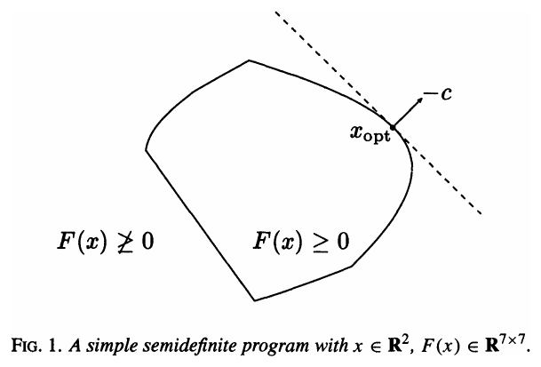
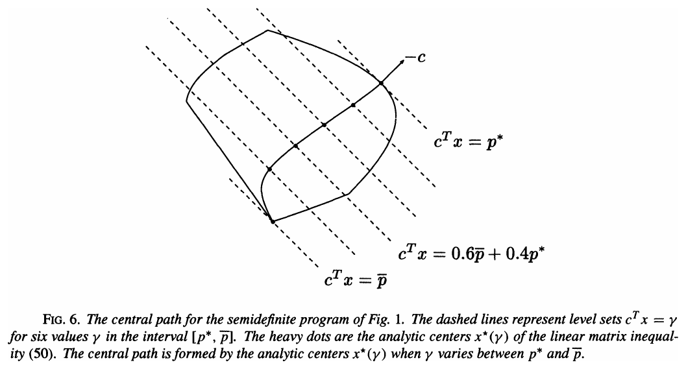
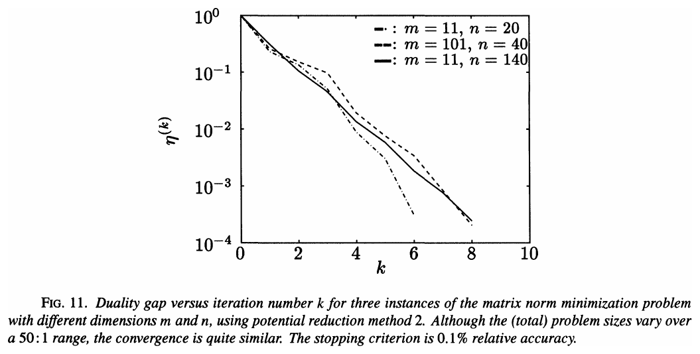
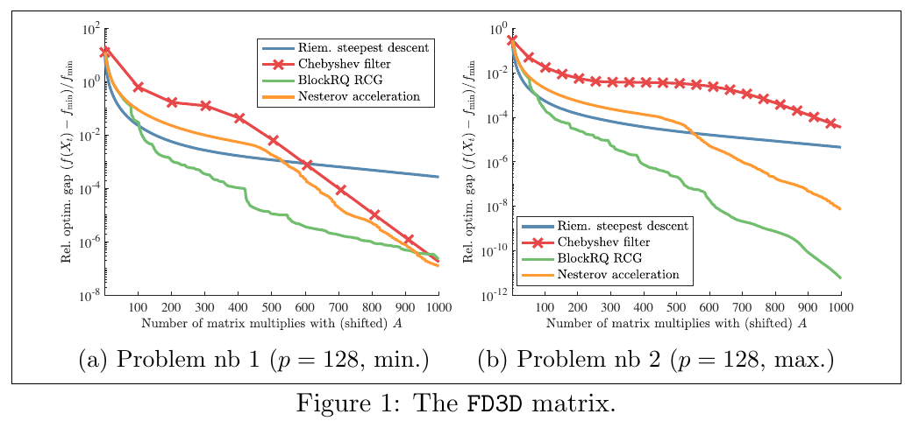
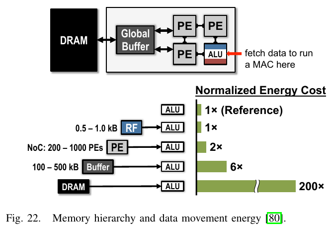
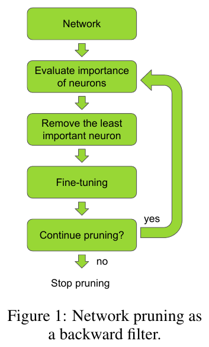
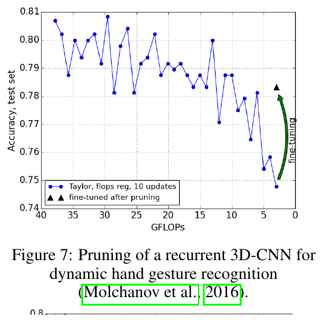
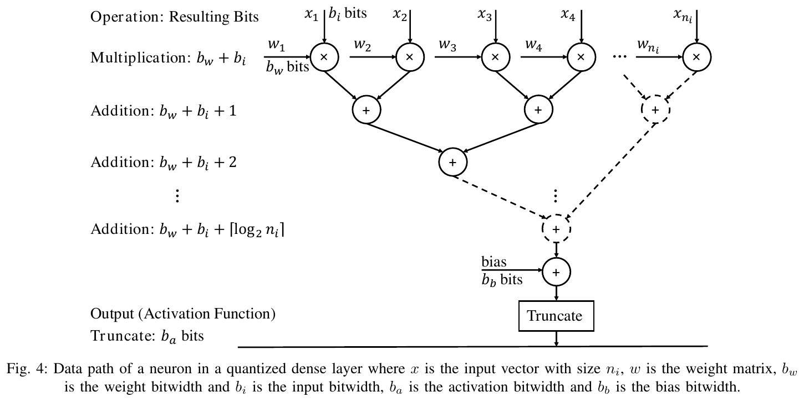

Module 14 · Computational complexity: SDP, matrix decomposition, neural inference
The cost of computing the Helstrom bound and the surrogate break-even point
- Compute the variable count and per-round cost of the Helstrom SDP
- Count FLOPs, parameters and memory of the MLP + Cholesky surrogate
- Compute the break-even \(N^*\) and read the measured numbers correctly
- Distinguish FLOPs, batched latency and per-call latency
📚 Source documents of this module (each file checked against its actual content)
| File in the archive | Paper (verified against its content) | Pages | Status | Used in this module |
|---|---|---|---|---|
| Vandenberghe_Boyd_1996_SDP_SIAM.pdf | Semidefinite Programming L. Vandenberghe, S. Boyd · 1996 · SIAM Review 38(1), 49-95 | 47 | Read, title matches | Standard form, interior point, \(O(m^2n^2)\) (p. 89), 5 to 50 iterations (pp. 52, 84); Figs. 1, 6, 11 |
| Robust_IPM_SDP_complexity_2021.pdf | Solving SDP Faster: A Robust IPM Framework and Efficient Implementation B. Huang, S. Jiang, Z. Song, R. Tao, R. Zhang · 2021 · arXiv:2101.08208v2 | 70 | Partly read (long book) | Abstract and Sec. 1 read (pp. 1 to 3): \(O(\sqrt n(mn^2+m^\omega+n^\omega))\) and \(m^\omega\) time |
| Nesterov_accelerated_eigenvalue_2022.pdf | A Nesterov-style Accelerated Gradient Descent Algorithm for the Symmetric Eigenvalue Problem F. Alimisis, S. Vary, B. Vandereycken · 2024 · arXiv:2406.18433v1 | 38 | Partly read (long book) | File name says 2022 but the paper is June 2024. Abstract, Secs. 1 and 2, Fig. 1 read |
| D_decomposition_On3_2024.pdf | Efficient Matrix Decomposition for High-Dimensional Structured Systems: Theory and Applications R. Katende · 2024 · arXiv:2409.06321v1 | 8 | Read, title matches | Single author (older archive notes say "Zhao et al."); \(O(n^2k)\) only for sparse or low-rank matrices |
| Freire_2022_NN_complexity_signal_processing.pdf | Computational Complexity Optimization of Neural Network-Based Equalizers in Digital Signal Processing: A Comprehensive Approach P. J. Freire et al. · 2022 · J. Lightwave Technol. (arXiv:2206.12191v2, 2024) | 25 | Partly read (long book) | RM, BOP, NABS for dense layers: Eqs. (3), (5), (7) (pp. 9 and 10); Fig. 4 |
| Yang_2017_efficient_inference_survey.pdf | Efficient Processing of Deep Neural Networks: A Tutorial and Survey V. Sze, Y.-H. Chen, T.-J. Yang, J. S. Emer · 2017 · arXiv:1703.09039v2 (Proc. IEEE) | 32 | Partly read (long book) | File name says "Yang" but the first author is Sze. Secs. II, III and VI read; Figs. 3, 22 |
| Molchanov_2017_pruning_FLOPs.pdf | Pruning Convolutional Neural Networks for Resource Efficient Inference P. Molchanov, S. Tyree, T. Karras, T. Aila, J. Kautz · 2017 · ICLR 2017 (arXiv:1611.06440) | 17 | Partly read (long book) | Taylor criterion Eq. (7), FLOPs regularisation Eq. (9); Figs. 1, 7 (pp. 2 to 9) |
Lecture (slides)
Use the ← → keys or the buttons; ⛶ opens full-screen presentation.
The Helstrom problem as an SDP
- \(\rho_i\)received state for symbol \(i\)
- \(\Pi_i\)POVM element, a \(d\times d\) matrix
- \(p_i\)prior probability
The largest success probability is \(1-P_e^{\min}\). With \(M\) hypotheses and a Fock space truncated at \(d\), the problem has \(Md^2\) real variables.
Standard form of a semidefinite program

Nguồn: Vandenberghe & Boyd, Semidefinite Programming, SIAM Review 38(1), 1996, Fig. 1 (tr. 50)
- \(F_i\)\(m+1\) symmetric \(n\times n\) matrices
- \(m,n\)number of variables, matrix size
The feasible set is convex with a piecewise smooth boundary, and the optimum lies on the boundary (Vandenberghe and Boyd, p. 50).
Problem size versus M and d
With \(M\) states and matrices of size \(d\), the SDP has \(m=Md^2\) variables and constraint size \(n=d\).
- \(m=Md^2\)variables
- \(n=d\)PSD matrix size
| M | d | \(m=Md^2\) | \(m^2n^2\) |
|---|---|---|---|
| 2 | 16 | 512 | 67,108,864 |
| 2 | 20 | 800 | 256,000,000 |
| 2 | 30 | 1,800 | 2,916,000,000 |
| 3 | 20 | 1,200 | 576,000,000 |
| 4 | 20 | 1,600 | 1,024,000,000 |
Barrier function and central path

Nguồn: Vandenberghe & Boyd, Semidefinite Programming, SIAM Review 38(1), 1996, Fig. 6 (tr. 74)
- \(\phi\)finite inside, \(\to\infty\) at the boundary
- \(\gamma\)objective level
Interior-point methods follow this path from the center to the optimum without touching the boundary.
Iteration count of interior-point methods

Nguồn: Vandenberghe & Boyd, Semidefinite Programming, SIAM Review 38(1), 1996, Fig. 11 (tr. 85)
- \(\epsilon\)relative accuracy
In practice the count grows slower than \(\sqrt n\), perhaps like \(\log n\) or \(n^{1/4}\) (p. 84).
Per-iteration cost O(m²n²)
- \(m^2n^2\)least squares with \(m\) variables and \(n(n+1)/2\) equations (Sec. 7.6, p. 89)
- \(k\)typical iteration count
| Setting | \(T_{\text{iter}}\) | \(20\,T_{\text{iter}}\) |
|---|---|---|
| M=2, d=16 | 67,108,864 | 1,342,177,280 |
| M=2, d=20 | 256,000,000 | 5,120,000,000 |
| M=2, d=30 | 2,916,000,000 | 58,320,000,000 |
Eigendecomposition in place of the SDP
- \(\lambda_k\)eigenvalues of \(\rho_1-\rho_0\) (real symmetric)
- \(\|\cdot\|_1\)trace norm
For \(M=2\) with equal priors no SDP is needed: only the \(d\) eigenvalues of a \(d\times d\) matrix.
The O(d³) cost of the eigendecomposition
- \(c\)algorithm-dependent constant, \(c=10\) used for estimates (assumption)
| d | \(d^3\) | \(10\,d^3\) | SDP \(M{=}2\): \(m^2n^2\) |
|---|---|---|---|
| 8 | 512 | 5,120 | 1,048,576 |
| 16 | 4,096 | 40,960 | 67,108,864 |
| 20 | 8,000 | 80,000 | 256,000,000 |
| 30 | 27,000 | 270,000 | 2,916,000,000 |
| 64 | 262,144 | 2,621,440 | 274,877,906,944 |
The ratio \(m^2n^2/d^3=4d^3\) for \(M=2\): the gap widens like \(d^3\) as \(d\) grows.
The quadrature oracle of the project
- \(u_i,I_i\)Gauss-Legendre weights and nodes in \(\log I\) (Gamma-Gamma density)
- \(v_j,w_j\)Gauss-Hermite weights and nodes for the noise
- \(K=n_In_w\)total quadrature nodes
This is exactly the label pipeline of the project (ttn-12-08, quadrature_baseline.py): deterministic, no Monte Carlo noise.
Oracle cost versus number of nodes
- \(4Kd^2\)\(K\) nodes, 2 states, \(d^2\) entries, 2 FLOPs per multiply-add
- \(c\,d^3\)eigendecomposition, \(c=10\) (assumption)
| Grid \(n_I\times n_w\) | K | Estimated FLOPs (d=16) | Measured ms/sample |
|---|---|---|---|
| 24 × 7 | 168 | 212,992 | 2.72 (measured 5 Oct 2026) |
| 48 × 41 | 1 968 | 2,056,192 | 13.5 (validity_timing_v3) |
The 48×41 grid is the converged grid of the v3 labels; the 24×7 grid gives large label errors at \(\sigma=1\).
Eigenvalues by accelerated gradient descent

Nguồn: Alimisis, Vary & Vandereycken, arXiv:2406.18433 (2024), Fig. 1 (tr. 32)
- \(\delta=\lambda_p-\lambda_{p+1}\)spectral gap
Iterative methods target the first \(p\) eigenpairs of a huge matrix. A Helstrom problem with \(d\le 64\) needs the entire spectrum, so the direct \(O(d^3)\) route stays sensible.
D-decomposition and its limits of use
- \(P,D,Q\)three structured factors (sparse, low rank)
- \(k\)structure parameter, e.g. rank
Single author, arXiv v1, not peer reviewed; the archive notes mislabel the author as "Zhao et al.".
FLOPs of the surrogate at d = 16
- \(n_i\)input features
- \(n_n\)neurons in the layer
- \(\mathrm{RM}\)real multiplications (Freire et al., Sec. IV-A, Eq. (3))
| Layer | Formula | FLOPs |
|---|---|---|
| \(9\to128\) | \(2\cdot9\cdot128\) | 2,304 |
| \(128\to128\) | \(2\cdot128\cdot128\) | 32,768 |
| \(128\to256\) | \(2\cdot128\cdot256\) | 65,536 |
| \(256\to256\) | \(2\cdot256\cdot256\) | 131,072 |
| \(256\to d^2\ (\times2)\) | \(2\cdot2\cdot256\cdot16^2\) | 262,144 |
| Cholesky + eigendecomposition | \(2d^2+d^3\) | 4,608 |
| Total | 498,432 |
Surrogate FLOPs versus Fock size d
- \(h_4=256\)width of the last trunk layer
- \(4h_4d^2\)two Cholesky heads \(2\cdot2h_4d^2\)
| d | Trunk | 2 heads | \(d^3\) | Total | Head share |
|---|---|---|---|---|---|
| 16 | 231,680 | 262,144 | 4,096 | 498,432 | 52.6% |
| 20 | 231,680 | 409,600 | 8,000 | 650,080 | 63.0% |
| 30 | 231,680 | 921,600 | 27,000 | 1,182,080 | 78.0% |
As \(d\) grows the cost moves from the trunk to the Cholesky heads; FLOPs rise only about 2.4 times from \(d=16\) to \(d=30\).
Parameters and memory of the surrogate
- \(P\)number of parameters (weights and biases)
- \((2Md^2)^2\)SDP Schur matrix: \(m^2=(Md^2)^2\) reals per sample
| d | Parameters \(P\) | Weight memory | SDP Schur (reals, \(M{=}2\)) |
|---|---|---|---|
| 16 | 248,192 | 0.993 MB | 262,144 |
| 20 | 322,208 | 1.29 MB | 640,000 |
| 30 | 579,208 | 2.32 MB | 3,240,000 |
The surrogate memory is fixed and shared by all samples. The SDP memory is working memory per sample and grows like \(M^2d^4\).
Operation count: SDP versus surrogate
- \(4d^6\)\(M^2d^6\) with \(M=2\)
- \(20\)typical iteration count (Vandenberghe and Boyd: 5 to 50)
| Ratio | Value |
|---|---|
| One SDP round / surrogate | 135 |
| 20 SDP rounds / surrogate | 2.69e+03 |
| Oracle 48×41 / surrogate (estimated FLOPs) | 4.13 |
Latency measured in one Kaggle session
- \(t_{\text{ref}}\)per-sample time of the reference method
- \(t_{\text{sur}}\)per-sample time of the surrogate (batched)
| Method | ms/sample | Note |
|---|---|---|
| Surrogate, batch of 256 | 0.0209 | 5 passes over 4500 test samples |
| Surrogate, one sample | 0.893 | call overhead dominates |
| Quadrature oracle 24×7 | 2.72 | d=16 |
| SDP (CVXPY/SCS, eps=1e-6) | 113.9 | median 95.2; 20 samples |
| Closed form Eq. (39), FP64 | 0.0532 | median 0.0058 |
| Closed form, log-domain | 13,4 | 160 nodes |
Kaggle CPU Intel Xeon 2.2 GHz, 4 cores, PyTorch 2 threads; seed-999 checkpoint (EXPERIMENTS.md, section "same-session speed benchmark", 5 Oct 2026; ttn-12-08/report/oracle_benchmark/benchmark.json).
Break-even from the same-session timings
- \(T_{\text{up-front}}\)training plus label generation, paid up front
- \(t_{\text{ref}}-t_{\text{sur}}\)time saved per evaluation
One seed, 2000 epochs, \(T=14\,687\) s (EXPERIMENTS.md, fit_sec of seed 2024):
Both results match the figures stated in EXPERIMENTS.md (\(1.3\times10^5\) and \(5.4\times10^6\)).
Break-even in the project paper
The converged oracle (quadrature \(n_I=48,n_w=41\) plus eigendecomposition) takes 13.5 ms/sample, the same at all three noise levels. Surrogate: 0.018 ms batched, 0.79 ms per call. SDP: 114 ms.
\[ T\approx1.1\times10^{5}\ \text{s}\ (6000\ \text{epoch})\ \Rightarrow\ N^{*}_{\text{SDP}}\approx10^{6},\quad N^{*}_{\text{oracle}}\approx8\times10^{6} \]validity_timing_v3.json (oracle_48x41_ms_by_sigma: 13.73, 13.43, 13.53 ms; surrogate_batched_ms 0.0179; surrogate_percall_ms 0.791).| Quantity | Recomputed value |
|---|---|
| \(N^*_{\text{SDP}}=1.1\!\times\!10^5/(0.1139-0.0000179)\) | 9.66e+05 |
| \(N^*_{\text{oracle}}=1.1\!\times\!10^5/(0.01357-0.0000179)\) | 8.12e+06 |
| Batched speedup vs SDP / oracle | 6356 / 757 |
FLOPs and latency are different measures

Nguồn: Sze, Chen, Yang & Emer, arXiv:1703.09039 (2017), Fig. 22 (tr. 14)
- \(F,B\)FLOPs and bytes moved
- \(t_0\)fixed call overhead
The DNN literature stresses that moving data often costs more than computing.
Per-call versus batched evaluation
- \(B\)batch size (256 in the measurement)
- \(t_0\)call overhead, about \(0.8\) ms
| Versus | Batched | Per call |
|---|---|---|
| SDP (114 ms) | 6356× | 144× |
| Oracle 48×41 (13.5 ms) | 757× | 17× |
Three SDP constants in the archive
- \(t_{\text{SDP}}\)time to solve one SDP sample (ms)
| ms/sample | Source | Note |
|---|---|---|
| 85.24 | hard-coded constant in compare_vs_closed_form.py | not measured in the same session |
| 21,49 | BENCHMARK_RESULTS.md 22-4-2026 (CVXPY) | different machine, \(d=20\) |
| 113.9 | benchmark.json 5-10-2026 (SCS, eps 1e-6) | same session as surrogate and oracle |
Closed-form Eq. (39): cheap but narrow
- \(\mathbb E_I[e^{-sI}]\)Laplace transform of the Gamma-Gamma density
- \(\bar n\)mean photon number
| Implementation | ms/sample | Coverage |
|---|---|---|
| Direct FP64 | 0.0532 (median 0.0058) | 360/4500 |
| log-domain 160 nodes | 13.4 | 4500/4500 |
The FP64 version is finite on 360/4500 samples (Kaggle) or 363/4500 (personal machine), so "coverage" depends on the platform. The stable version costs as much as the oracle.
Network pruning by the Taylor criterion

Nguồn: Molchanov et al., ICLR 2017, Fig. 1 (tr. 2)
- \(h_i\)output of a parameter or feature map
- \(\mathcal C\)cost function
Remove the unit with the smallest estimated cost change, then fine-tune by backpropagation (Sec. 2.2, p. 4).
FLOPs-driven pruning

Nguồn: Molchanov et al., ICLR 2017, Fig. 7 (tr. 9; số GFLOPs ở tr. 8)
- \(\Theta_{\text{flops}}\)FLOPs of the feature map (sliding window)
For our MLP, halving every width takes FLOPs from 498,432 to 194,176 (2.6 times), but nobody has checked the accuracy (illustration).
Quantisation and bit operations

Nguồn: Freire et al., J. Lightwave Technol. (arXiv:2206.12191v2), Fig. 4 (tr. 10)
- \(b_w,b_i\)bit width of weights and inputs
With \(b_w=b_i=8\), \(n_i=256\): the product term \(b_wb_i=64\) dominates the accumulator \(8+8+8=24\) bits (by Eq. 7).
Limits of the break-even analysis
- \(T\)up-front cost, including labels and trial runs
- \(N\)number of evaluations
- The two \(T\) values differ 7.5-fold (14,687 s for 2000 epochs; 1.1×10⁵ s for 6000 epochs) because of different epoch counts and machine load.
- \(T\) excludes ablation runs (many trainings), so the true break-even is further away.
- The network is valid only inside the trained domain (\(\bar n\le1.1\), 3 noise levels); outside it \(T\) must be paid again.
Lookup table and surrogate: the same cost problem
- \(k\)effective inputs
- \(g\)grid points per axis
- \(G\)oracle calls
| Method | Up front | Per query |
|---|---|---|
| SDP (SCS) | none | 114 ms |
| Quadrature oracle 48×41 | none | 13.5 ms |
| Lookup table + spline | 3900 oracle calls (about 20 s) | \(1.5\times10^{-4}\) ms |
| Surrogate | training, about 30 to 35 h | 0.018 / 0.79 ms |
The lookup table interpolates inside \(\bar n\le1.1\), costs seconds to build and is about 100 times faster than the surrogate per query; the surrogate pays off for higher-dimensional inputs.
Timeline: from interior-point SDP to surrogate cost
A real case: counting equaliser complexity
The journal paper proposes metrics that bridge software and hardware (RM, BOP, NABS) for dense, convolutional and recurrent layers, then applies them to optical equalisers: a biLSTM+CNN teacher and a 1D-CNN student.
\[ \mathrm{RM}_{\text{Dense}}=n_nn_i,\qquad \mathrm{BOP}_{\text{Mul}}=n_n\bigl[n_ib_wb_i+(n_i-1)(b_w+b_i+\lceil\log_2n_i\rceil)\bigr] \]Use in the project: the surrogate FLOPs follow \(2\,\mathrm{RM}\) (ignoring activations and biases).
A repeatable timing protocol
- \(R\)repetitions (300 samples, 5 passes over test in the measurement)
- \(\tilde t\)median, robust to a few slow calls
- Same session, machine and thread count (Xeon 2.2 GHz, 4 cores, PyTorch 2 threads).
- Report both mean and median: the FP64 closed form has mean 0.0532 ms but median 0.0058 ms.
- Time batched and per-call separately; state the batch size.
- Cross-check results across methods before comparing times (SDP versus eigendecomposition differ by at most \(2.08\times10^{-6}\)).
Method choice by number of evaluations
- \(N^*\)about \(10^6\) against SDP, \(8\times10^6\) against the oracle
| Situation | Choice |
|---|---|
| A few thousand points, once | Quadrature oracle (13.5 ms per point) |
| Sweeps of \(\bar n,\sigma_R^2\) inside the trained domain, repeatedly | Lookup table or batched surrogate |
| Large \(\bar n\) or continuous \(\sigma\) | Oracle with large \(d\) (outside the surrogate domain) |
| \(M\ge3\), no closed form | SDP as the reference, surrogate when speed is needed |
Summary of the complexity formulas
- \(M,d\)states, Fock dimension
- \(K\)quadrature nodes
- \(f,h,N_{\text{layer}}\)inputs, width, hidden layers
| Method | Order in \(d\) | Measured (d=16) |
|---|---|---|
| SDP | \(d^6\) | 114 ms |
| Oracle | \(d^2K+d^3\) | 13.5 ms |
| Surrogate | \(d^2+d^3\) | 0.018 ms |
Conclusions on the cost of computing the Helstrom bound
- \(T\)training and labelling cost
- The SDP is general but costs \(O(M^2d^6)\) per round, measured at 114 ms per sample.
- For \(M=2\) the \(O(d^3)\) eigendecomposition gives the same answer; the quadrature oracle also packs the channel average (13.5 ms).
- The surrogate takes 0.018 ms batched, about 757 times faster than the oracle, but breaks even only after about \(8\times10^6\) evaluations.
- FLOPs give only an upper bound on the gain; latency depends on batching and call overhead.
Detailed notes
In plain words
Computing the Helstrom bound is like marking exams: there is a general but very slow way (the SDP), a fast way when there are only two answers (eigenvalues), and a way of memorising answers beforehand (the surrogate). Memorising costs effort at first, so it pays off only when you must mark very many papers.
Theoretical and historical background
Vandenberghe and Boyd (1996) introduced interior-point methods for SDP: \(O(\sqrt n)\) iterations in theory, 5 to 50 in practice, each \(O(m^2n^2)\). Jiang et al. (FOCS 2020) reached \(O(\sqrt n(mn^2+m^\omega+n^\omega))\); Huang et al. (2021) brought it to \(m^\omega\) for \(m=\Omega(n^2)\) with a robust interior-point analysis. These are asymptotic results; at \(d=16\) a real solver uses warm starts, so measurements are far below the theoretical count. On the network side, Sze et al. (2017) stress data movement, Molchanov et al. (2017) prune by FLOPs, and Freire et al. (2022) standardise counting.
Worked examples
- Original trunk: \(2(9\cdot128+128\cdot128+128\cdot256+256\cdot256)=231\,680\).
- New trunk (64,64,128,128): \(2(9\cdot64+64\cdot64+64\cdot128+128\cdot128)=58,496\).
- Two heads at \(d=16\): \(4\cdot128\cdot256=131,072\), plus \(512+4096\).
- Total 194,176 versus 498,432: a 2.57-fold reduction. (illustration, accuracy not checked)
- But with per-call use the overhead \(t_0\approx0.8\) ms still takes nearly all the time, so latency barely changes.
- \(m=Md^2=3\cdot400=1200\), \(n=20\).
- \(m^2n^2=1200^2\cdot400=576,000,000\).
- 20 rounds: 11,520,000,000 (matches the archive table: 11,520,000,000).
- Surrogate at the same \(d=20\): 650,080 FLOPs, ratio about 17721.
- A grid \(50\times3\times30\times20=90,000\) points (\(\bar n,\sigma,L,C_n^2\)). (assumption)
- Oracle: \(90,000\times13.5\) ms \(\approx 1215\) s (about 20 minutes).
- SDP: \(90,000\times114\) ms \(\approx 10260\) s (about 2.9 hours).
- Batched surrogate: \(90,000\times0.018\) ms \(\approx 1.6\) s, but training costs \(1.1\times10^5\) s.
- Conclusion: a single sweep needs only the oracle; the surrogate is worthwhile only after about \(10^2\) such sweeps (\(N^*\approx8\times10^6\)).
- MLP 41 → 64 → 32 → 2, excluding the output layer as Freire et al. do. (assumption)
- \(\mathrm{RM}=41\cdot64+64\cdot32=4,672\) multiplications per symbol.
- At 64 GBd: \(4,672\times6.4\times10^{10}\approx 2.99e+14\) multiplications per second.
- Real-time constraints make RM and BOP matter here, unlike the offline surrogate.
- Eigendecomposition: \(10\cdot64^3=2,621,440\).
- One SDP round, \(M=2\): \(m=8192\), \(m^2n^2=2.75e+11\).
- Surrogate: 4,696,320 FLOPs, of which the two heads take 89%.
- The \(d^6\) versus \(d^2\) orders show the gap swelling with \(d\), so large-\(d\) oracles are where a surrogate helps most.
- Session of 5 Oct: \(T=14\,687\) s, SDP 0.1139 s, oracle 2.718 ms, surrogate 0.0209 ms.
- \(N^*_{\text{SDP}}=1.29e+05\), \(N^*_{\text{oracle}}=5.45e+06\).
- Paper: \(T=1.1\times10^5\) s, oracle 13.5 ms, surrogate 0.018 ms: \(N^*=8.16e+06\).
Case study
In the project paper the "Cost per evaluation" table lists SDP 114 ms, oracle 13.5 ms, FP64 closed form 0.053 ms, log closed form 13.4 ms, lookup table \(1.5\times10^{-4}\) ms, surrogate 0.018 / 0.79 ms. The text says openly that the SDP and closed-form rows were timed in the earlier session on the same hardware.
Pitfalls in exercises
- Writing \(m=M\cdot d\) instead of \(m=Md^2\).
- Forgetting the factor 2 when converting RM to FLOPs.
- Using \(t_{\text{ref}}\) and \(t_{\text{sur}}\) from different sessions.
- Mixing \(T\) of 2000 epochs with a 6000-epoch claim.
- Dividing by \(t_{\text{ref}}\) instead of \(t_{\text{ref}}-t_{\text{sur}}\).
Interactive practice
Quick self-check
Deep practice
Open the bank of 45 multiple-choice questions and 5 code-writing tasks →
References
- L. Vandenberghe, S. Boyd, Semidefinite Programming, SIAM Review 38(1), 49-95, 1996.
- B. Huang, S. Jiang, Z. Song, R. Tao, R. Zhang, Solving SDP Faster: A Robust IPM Framework and Efficient Implementation, arXiv:2101.08208, 2021.
- F. Alimisis, S. Vary, B. Vandereycken, A Nesterov-style Accelerated Gradient Descent Algorithm for the Symmetric Eigenvalue Problem, arXiv:2406.18433, 2024.
- R. Katende, Efficient Matrix Decomposition for High-Dimensional Structured Systems, arXiv:2409.06321, 2024.
- P. J. Freire et al., Computational Complexity Optimization of Neural Network-Based Equalizers in Digital Signal Processing, J. Lightwave Technol. (arXiv:2206.12191), 2022.
- V. Sze, Y.-H. Chen, T.-J. Yang, J. S. Emer, Efficient Processing of Deep Neural Networks: A Tutorial and Survey, arXiv:1703.09039, 2017.
- P. Molchanov, S. Tyree, T. Karras, T. Aila, J. Kautz, Pruning Convolutional Neural Networks for Resource Efficient Inference, ICLR 2017.
- ttn-12-08/EXPERIMENTS.md và report/oracle_benchmark/benchmark.json, report/stratified_dataset/validity_timing_v3.json.